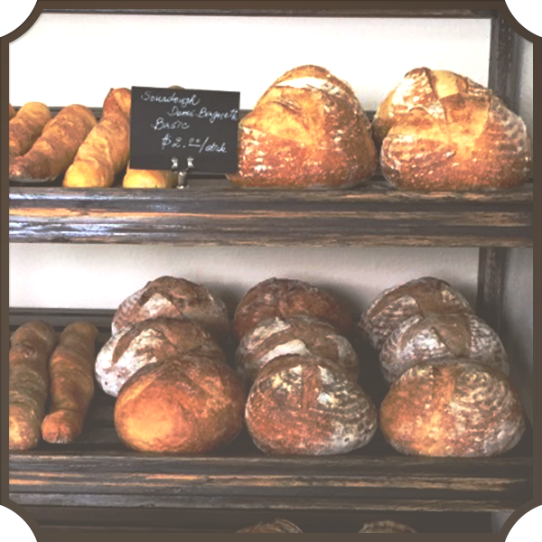

What Moses keeps in his mind as
the greatest virtue for baker is "patience".
Also he puts perfect concentration
on his work with time-management.
Wild-Yeast
All that we are eating can not be distorted with
unknown artificial stuff only to make our metabolisim unnatural,
eventually resulting in a variety of disease.
As you know from how to get the seed culture,
initially I am using pine apple juice(made by crushing it)
and dark rye flour as my teacher instructed in his book.
I can tell you how much sugar or butter is added to make dough.
The answer is "nothing".
Moses-Bread

ONLY 4 Ingredients
Flour
Healthy flour that does not contain anything
Wild Yeast
Moses's Nature-friendly wild yeast
Sea Salt
Only use clean sea salt
Water
Moses uses only four ingredients
Moses-Bread
Moses-Bread Menu
Moses Baguette
A healthy bread made in a traditional way. No added natural yeast baguette.
Moses Boule
A healthy bread made in a traditional way. No added natural yeast boule.